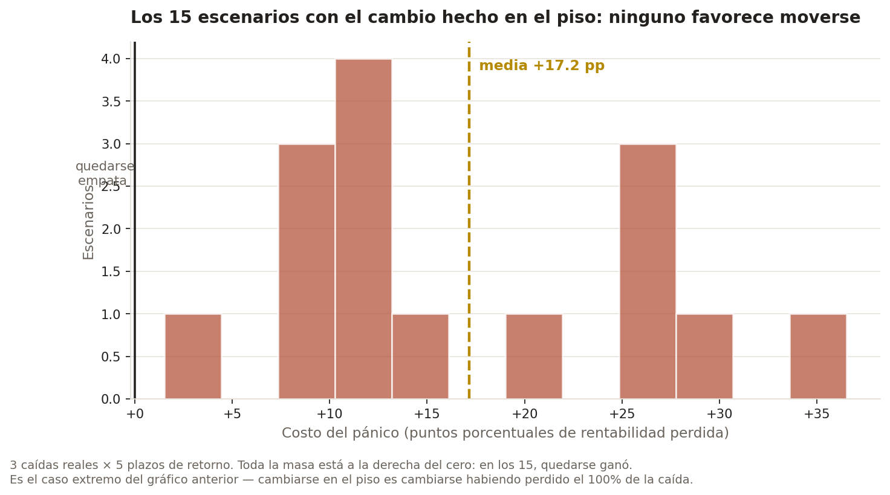

¿Cuánto cuesta cambiarse de fondo
cuando se cae la bolsa?
Tengo mis ahorros previsionales en un fondo que no elegí mirando datos, como casi todos. Así que me senté a responder esa pregunta con los datos diarios reales de la Superintendencia de Pensiones — 278.000 filas, 2002 a 2026 — y no con un mercado simulado.
Un apunte para quien no conoce el sistema: los ahorros obligatorios de cada trabajador están en uno de cinco multifondos (A a E) administrados por una AFP. El Fondo A invierte hasta 80% en acciones — más retorno esperado, más vaivén. El Fondo E es casi todo renta fija. Uno puede cambiarse cuando quiera, y la jugada popular en una caída es huir de A hacia el "seguro" E.
1.Por qué moverse en el piso cuesta

Quien se cambia en el piso materializa la caída completa y después acompaña a un fondo que sube mucho menos. No se pierde por haberse movido: se pierde por no estar cuando el fondo que se abandonó se recupera.
2.En los 15 escenarios, quedarse ganó siempre
Las caídas no las elegí a mano: un detector las encuentra barriendo el índice y marcando cada período bajo el agua de 15% o más. Salen tres — 2008, 2011 y 2020 — y cada una se prueba contra cinco plazos de retorno distintos.

3.¿Y si me hubiera movido antes?
Es la pregunta que sigue, y tiene una trampa. Barrer por "días antes del piso" da una respuesta tan cierta como inútil: cambiarse una semana después del techo de 2007 gana 90 puntos porque esquiva el crash entero. Pero nadie sabe que está parado en el techo — eso mide presciencia, no pánico.
Lo que una persona sí observa el día que decide es cuánto perdió hasta ahí. Indexando por eso, la respuesta se vuelve accionable:

| Pérdida ya sufrida al cambiarse | n | Costo mediano | Gana cambiarse |
|---|---|---|---|
| 0% a −5% | 145 | −14,0 pp | 100% |
| −5% a −10% | 123 | −18,2 pp | 94% |
| −10% a −20% | 159 | −10,1 pp | 74% |
| −20% a −30% | 19 | +2,9 pp | 42% |
| más de −30% | 35 | +16,2 pp | 29% |
Esto no es una estrategia. Que exista una zona donde cambiarse gana no la vuelve ocupable: ganar ahí exige saber que la caída va a continuar, que es justo lo que no se sabe en el momento. El umbral sirve en la dirección contraria — decirle a alguien que ya perdió mucho que moverse ahora no lo salva.
Y son 3 episodios, no 3.000. El balde de −20% a −30% se apoya en 19 combinaciones de las mismas crisis, así que ese 42% pesa mucho menos que el 100% de la primera fila.
4.La sorpresa: la gente no se cambia en el piso
Todo lo anterior responde cuánto costaría si alguien se cambiara — es un contrafactual de precios, no evidencia de que la gente lo haga. Así que fui a buscar el comportamiento real en los boletines mensuales de la Superintendencia.

Esto no prueba que la gente no entró en pánico. Chile estaba en cuarentena estricta, las sucursales cerradas y el trámite no era del todo digital. La caída se confunde con no haber podido cambiarse. El dato no da para más, y así queda dicho.
5.Dos trampas reales en los datos
- El encabezado del archivo cambia 31 veces. Qué AFP ocupa qué columna se mueve cada vez que una entra, sale o se fusiona. Leer el archivo con un encabezado fijo — el primer enfoque obvio — atribuye los números de una AFP a otra desde la primera fusión en adelante, en silencio.
- Dos boletines nombran el mes equivocado. La nota al pie que reporta los traspasos está escrita en prosa, y en al menos dos de los 22 boletines esa prosa contradice los encabezados de su propia tabla. El parser deriva el mes de la tabla, no de la prosa.
6.Correlo vos
pip install -r requirements.txt
python etl/fetch_valor_cuota.py # descarga los 5 archivos reales
python etl/build_duckdb.py
python analysis/timing_grid.py # la grilla de timing
python scripts/calculator.py # calculadora interactiva
scripts/calculator.py deja elegir una caída real (o fechas propias), a qué fondo te
habrías cambiado y cuántos meses después habrías vuelto, y calcula el costo histórico real contra
los mismos datos de esta página.